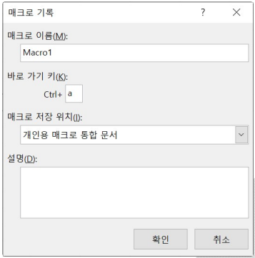
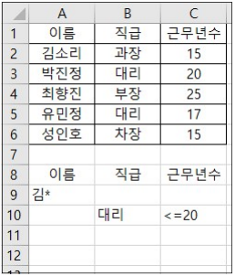
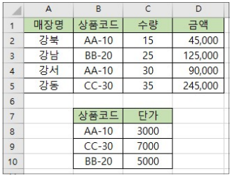

2026년 컴퓨터활용능력 2급 기출문제
제1과목 컴퓨터 일반
1. 다음 중 한글 Windows 10에서 기본 프린터에 관한 설명으로 옳지 않은 것은?
[해설]
- 기본 프린터는 네트워크 프린터나 로컬 프린터 중에서 오직 1대만 지정할 수 있습니다. (하나 이상 지정 불가)
2. 다음 중 한글 Windows 10의 [디스크 정리]에 관한 설명으로 옳은 것은?
[해설]
- 디스크 정리는 임시 파일, 빈 항목 등 불필요한 파일을 삭제하여 디스크의 사용 가능한 여유 공간을 확보하는 기능입니다.
- 번은 드라이브 조각 모음 및 최적화, 번은 백업에 대한 설명입니다.
3. 다음 중 인터넷을 통한 전자우편에 관한 설명으로 옳지 않은 것은?
[해설]
- 전자우편은 메일 서버가 수신된 편지를 보관하므로, 수신자의 컴퓨터가 꺼져 있어도 메일을 전송할 수 있습니다.
4. 다음의 장치 중에서 자료가 전송될 최적의 길을 찾아주는 역할을 하며, 네트워크 내의 정보가 다른 네트워크에서도 충분히 읽히도록 해주는 장치는?
[해설]
- 라우터(Router)는 서로 다른 네트워크를 연결하고 최적의 경로(경로 설정/라우팅)를 찾아주는 네트워크 장치입니다.
5. 프로그램에 대한 다음 설명 중 가장 옳지 않은 것은?
[해설]
- 프로그램을 작성하기 위해 사용하는 언어는 '프로그래밍 언어(C, Java, Python 등)'입니다. 기계어는 0과 1로 구성된 컴퓨터가 직접 이해할 수 있는 언어를 말합니다.
6. 다음 중 운영체제의 운용 방식으로 옳지 않은 것은?
[해설]
- 일괄 처리 시스템(Batch Processing)은 시스템의 효율성을 높이기 위해 모아서 한꺼번에 처리하는 방식으로 오프라인뿐만 아니라 온라인 환경에서도 다양하게 사용됩니다.
7. 다음 중 컴퓨터에서 사용하는 일반 하드디스크에 비하여 속도가 빠르고 기계적 지연이나 에러의 확률 및 발열 소음이 적으며, 소형화, 경량화할 수 있는 하드디스크 대체 저장장치는?
[해설]
- SSD(Solid State Drive)는 반도체를 이용한 보조기억장치로 HDD보다 속도가 빠르고 발열, 소음이 적습니다.
8. 다음 중 근거리 통신망(LAN)에 관한 설명으로 옳지 않은 것은?
[해설]
- LAN(근거리 통신망)은 보통 데이터를 동시에 송수신할 수 있는 전이중(Full-Duplex) 방식을 지원합니다.
9. 다음 중 아래에서 설명하는 그래픽 기법은?
컴퓨터 프로그램을 이용하여 3차원 애니메이션을 만드는 과정으로 사물 모형에 명암과 색상을 추가하여 사실감을 더해 주는 작업이다.
[해설]
- 렌더링(Rendering): 3차원 물체의 표면에 명암과 색상을 가해 입체감과 사실감을 더해주는 과정입니다.
10. 다음 중 컴퓨터를 이용한 가상 현실(Virtual Reality)에 관한 설명으로 옳은 것은?
[해설]
- 가상 현실(VR)은 컴퓨터 그래픽 및 3차원 기술을 통해 가상의 환경을 사용자가 실제 현실처럼 느끼게 해주는 기술입니다.
11. 다음 중 한글 Windows에서 임시 보관 장소로 사용되는 클립보드(Clipboard)에 관한 설명으로 옳지 않은 것은?
[해설]
- 클립보드는 휘발성 메모리(RAM)를 기반으로 사용하므로 재부팅(시스템 재시작) 시 내부 저장 데이터는 모두 삭제됩니다.
12. TCP/IP 프로토콜은 OSI 7계층 중에서 어느 계층에 속하는가?
[해설]
- TCP는 OSI 7계층 중 전송(트랜스포트) 계층, IP는 네트워크 계층에 해당하는 핵심 프로토콜입니다.
13. 전원을 켰을 때 화면이 표시되지 않을 경우 확인해야 할 다음 사항 중 가장 거리가 먼 것은?
[해설]
- 네트워크 연결장치의 장애 여부는 모니터 화면의 출력 유무와 직접적인 연관이 없습니다.
14. 라디오 주파수 인식 기술로서 IC 칩과 무선을 통해 식품, 동물, 사물 등 다양한 개체의 정보를 관리할 수 있는 차세대 인식 기술을 무엇이라 하는가?
[해설]
- RFID(Radio Frequency Identification)는 무선주파수를 이용하여 IC 칩에 저장된 정보를 비접촉 방식으로 식별하는 기술입니다.
15. 다음 중 [설정] → [마우스]에서 설정할 수 있는 기능으로 옳지 않은 것은?
[해설]
- Windows 마우스 설정에서 휠 스크롤 줄 수는 보통 1~100줄 사이에서 지정할 수 있으며 범위를 제한(10~50)하지 않습니다.
16. 다음 중 컴퓨터 소프트웨어 배포와 관련하여 셰어웨어(Shareware)에 관한 설명으로 옳은 것은?
[해설]
- 셰어웨어(Shareware)는 일정 기간이나 특정 기능을 제한적으로 무료 사용해 본 후 정품 구입을 유도하는 소프트웨어입니다.
17. 다음 중 한글 Windows 10의 작업 표시줄 설정에 대한 설명으로 옳지 않은 것은?
[해설]
- 작업 표시줄 설정 옵션 중 "작업 표시줄 단추 하나로 묶기" 설정을 통해 앱 단추 그룹화 여부를 설정하는 것으로, 단순히 꽉 차는 것뿐만 아니라 항상 묶거나 꽉 찼을 때 묶는 옵션을 사용자가 지정합니다.
18. 다음 중 네트워크 주변을 지나다니는 패킷을 엿보면서 계정(ID)과 비밀번호를 알아내는 보안 위협 행위는?
[해설]
- 스니핑(Sniffing): 패킷을 도청하여 계정 및 암호 등 정보를 몰래 훔쳐보는 행위입니다.
- 스푸핑(Spoofing)은 눈속임/위장, 백도어(Back Door)는 비밀 통로, 키로거(Key Logger)는 키보드 입력 정보 탈취입니다.
19. 다음 중 플래시 메모리(Flash Memory)에 관한 설명으로 옳지 않은 것은?
[해설]
- 트랙/섹터 단위로 데이터를 저장하는 것은 자기 디스크(하드디스크 등)의 구조입니다. 플래시 메모리는 블록/페이지 단위로 데이터를 읽고 씁니다.
20. 다음 중 컴퓨터에서 문자 데이터를 표현하는 방법으로 옳지 않은 것은?
[해설]
- 해밍 코드(Hamming Code)는 에러 교정 및 검출용 코드이며, 문자 표현 코드가 아닙니다. (EBCDIC, ASCII, Unicode는 문자 표현 코드)
제2과목 스프레드시트 일반
21. 다음 중 채우기 핸들을 이용하여 데이터를 입력하는 방법으로 옳지 않은 것은?
[해설]
- 숫자 셀을그그냥 채우기 핸들로 끌면 '복사'되고, [Ctrl] 키를 누른 채 끌면 '1씩 증가'하여 입력됩니다.
22. 다음 수식의 결과가 나머지와 다른 것은?
[해설]
- LEFT("123.654", 6) -> 123.65
- ROUND(123.654, 2) -> 123.65
- ROUNDUP(123.654, 2) -> 123.66 (올림 처리)
- ROUNDDOWN(123.654, 2) -> 123.65
23. 다음 중 [페이지 설정] 대화상자의 [시트] 탭에 대한 설명으로 옳지 않은 것은?
[해설]
- [행/열 머리글]을 선택하면 열 문자(A, B, C...) 및 행 번호(1, 2, 3...)가 인쇄되며, 반복 인쇄는 '인쇄 제목' 기능에서 설정합니다.
24. 다음 중 데이터 통합에 관한 설명으로 옳지 않은 것은?
[해설]
- '원본 데이터에 연결' 기능은 다른 통합 문서의 데이터 원본을 연결할 수도 있습니다. 단, 동일한 워크시트 내에서는 원본 연결 기능을 사용할 수 없습니다.
25. 입력된 값이 10,000 이상일 때 만○○○○원으로 표시하고자 한다. 올바르게 지정된 셀 서식 형식은?
표시 예 : 13546 → 1만3456원, 123 → 123원
[해설]
- 조건 서식 구분기호는 세미콜론(;)을 사용합니다. `[>=10000]#"만"####"원";#"원"` 형식으로 작성해야 10000 이상의 조건 및 이하 값 형식을 충족합니다.
26. 다음 중 원형 차트에 대한 설명으로 옳지 않은 것은?
[해설]
- 원형 차트는 항상 단 1개의 데이터 계열만 표시할 수 있습니다. (다중 데이터 계열 표현 불가)
27. 다음 중 아래와 같이 설정된 [매크로 기록] 대화상자에 대한 설명으로 옳지 않은 것은?

[해설]
- 매크로 이름 수정은 [매크로] 대화상자에서 바로 수정할 수 없고, Visual Basic Editor(VBE) 편집 창으로 들어가 모듈 코드 내에서 이름을 변경해야 합니다.
28. 다음과 같이 고급 필터를 수행했을 때 추출되는 이름이 아닌 것은?

[해설]
- 조건을 만족하는 레코드는 성인호(대리, 근무년수 25)를 제외한 인원들입니다. 조건의 대리 조건 혹은 김* 조건에 부합하지 않는 성인호는 필터링 대상에서 제외됩니다.
29. 다음 중 날짜 및 시간 데이터에 관한 설명으로 옳지 않은 것은?
[해설]
- 날짜 및 시간 데이터는 수치 데이터로 취급되므로 기본 정렬 방향은 '오른쪽 맞춤'입니다.
30. 다음 중 매크로를 실행하는 방법에 대한 설명으로 옳지 않은 것은?
[해설]
- 셀 자체의 바로 가기 메뉴에는 [매크로 지정] 메뉴가 없습니다. 매크로는 양식 컨트롤, 도형 등의 개체에 지정을 해서 연결해야 합니다.
31. 다음 중 정렬에 대한 설명으로 옳은 것은?
[해설]
- 엑셀 정렬은 셀 값뿐만 아니라 셀 색, 글꼴 색, 조건부 서식 아이콘을 기준으로 정렬이 가능합니다. (최대 64개 기준 지정 가능, 병합된 셀은 크기가 동일하지 않으면 정렬 불가)
32. 셀에 데이터를 입력하던 중 [Alt]+[Enter]를 누르면 어떻게 되는가?
[해설]
- 하나의 셀 내에서 두 줄 이상의 문자열을 입력하고자 할 때는 [Alt]+[Enter] 단축키를 이용합니다.
33. 다음 중 [텍스트 나누기] 기능에 대한 설명으로 옳지 않은 것은?
[해설]
- 구분 기호는 복수로 여러 개를 동시에 선택하여 지정할 수 있습니다.
34. 다음 중 피벗 테이블에 대한 설명으로 옳지 않은 것은?
[해설]
- 원본 데이터가 변경되어도 피벗 테이블에 자동으로 반영되지 않으며, [새로 고침]을 클릭해야 변경사항이 적용됩니다.
35. 다음 중 항목 레이블이 월, 분기, 연도와 같이 일정한 간격의 값을 나타내는 경우에 적합한 차트로 일정 간격에 따라 데이터의 추세를 표시하는 데 유용한 것은?
[해설]
- 꺾은선형 차트(Line Chart)는 연속적인 시간 흐름이나 일정 간격에 따른 데이터의 변동 추세를 나타내기에 가장 적합합니다.
36. 아래 워크시트는 수량과 상품코드별 단가를 이용하여 금액을 산출한 것이다. 다음 중 [D2] 셀에 사용된 수식으로 옳은 것은? (단, 금액 = 수량 × 단가)

[해설]
- VLOOKUP 형식: `VLOOKUP(찾을값, 참조범위, 열번호, 찾기옵션)`
- 정확히 일치하는 문자형 코드를 찾아야 하므로 마지막 옵션에 `FALSE` (또는 `0`)를 지정해야 합니다. 따라서 수식은 `=C2 * VLOOKUP(B2, $B$8:$C$10, 2, FALSE)` 가 됩니다.
37. "2020년 매출 실적" 파일의 "상품 재고" 시트 [B2] 셀을 참조하려고 한다. 다음 중 옳은 것은?
[해설]
- 다른 통합 문서의 셀 참조 문법: `'[파일명]시트명'!셀주소`
- 파일명이나 시트명에 공백이 포함된 경우 작은따옴표(' ')로 전체 경로/시트명을 감싸줍니다.
38. 상품 가격이 2,500원짜리인 물건에 대하여 총 판매액이 1,500,000원이 되게 하기 위해서는 판매수량이 얼마나 되어야 하는지 알아보기 위해 사용되는 유용한 기능은?
[해설]
- 목표값 찾기(Goal Seek)는 결과값(총 판매액 1,500,000원)을 알고 있을 때, 그 결과값을 얻기 위한 입력값(판매수량)을 역산하여 찾는 기능입니다.
39. 다음 중 작업 시트의 인쇄와 관련해서 옳지 않은 것은?
[해설]
- 인쇄 작업 지정 시 일괄적으로 인쇄 매수(부수)를 설정하므로 페이지별로 인쇄 부수를 각각 다르게 설정하는 것은 불가능합니다.
40. 엑셀에서 사용하는 바로 가기 키와 동일한 키로 매크로의 바로 가기 키를 설정한 후 해당 바로 가기 키를 눌렀을 때의 상황으로 옳은 것은?
[해설]
- 엑셀 기본 바로 가기 키와 매크로 바로 가기 키가 중복 정의되면, 우선순위에 따라 매크로 바로 가기 키가 우선 적용되어 동작합니다.